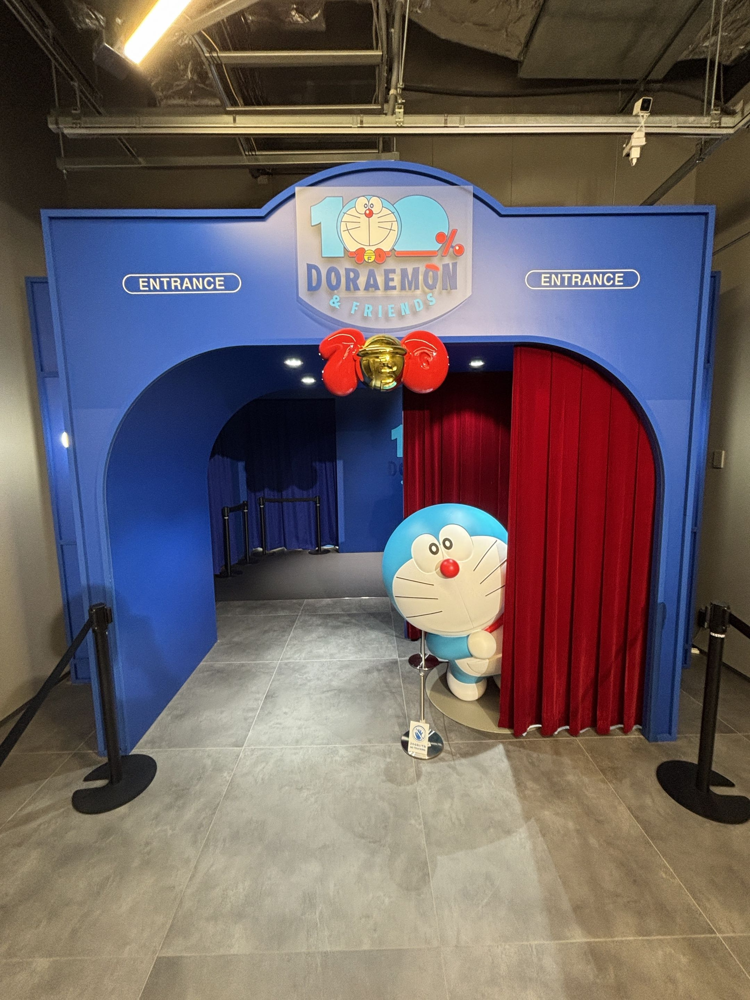
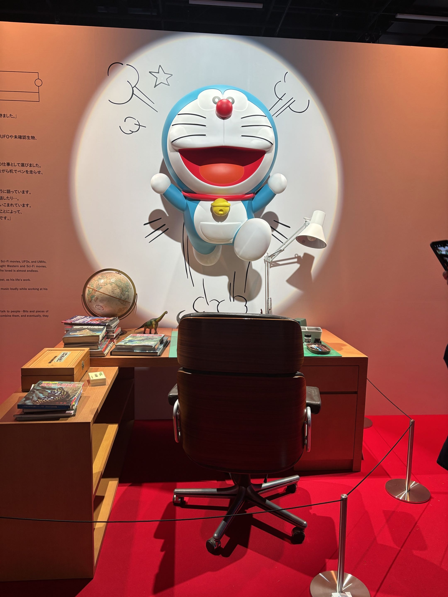

自己紹介
法学部の藤本聖那です。
趣味はサッカーを観ることと音楽を聴くことです。
また、ドラえもんが好きで最近、100%ドラえもん＆フレンズ in 東京というイベントに行きました。
このページではそのイベントについて話します。
100%ドラえもん＆フレンズ in 東京

入り口ではドラえもんが出迎えてくれ、入ってすぐにイベントのために制作されたアニメを見て、イベントに没入できるようになっていました。

この写真は藤子・F・不二雄の机とドラえもんを思いついたことを表現するようなものになっています。
他にも室内の展示はドラえもんの名シーンが展示になっており、見どころ満載の展示になっていました。

室内の展示と屋外の展示にこの写真のように様々な種類のドラえもんがいて、満足感のあるものとなっています。
皆さんも是非行ってみてください。
100%ドラえもん＆フレンズ in 東京 HP